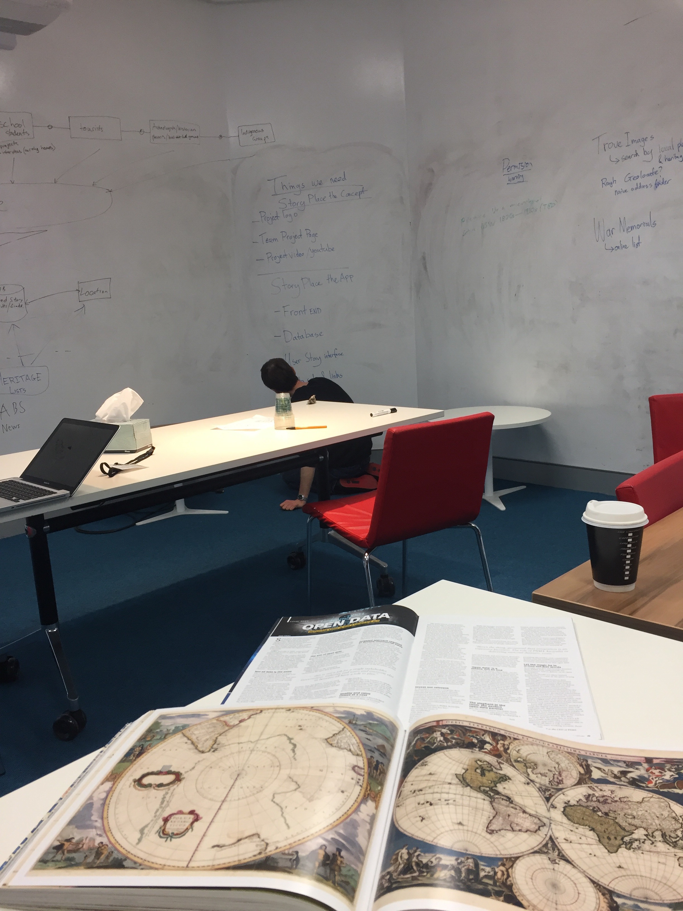
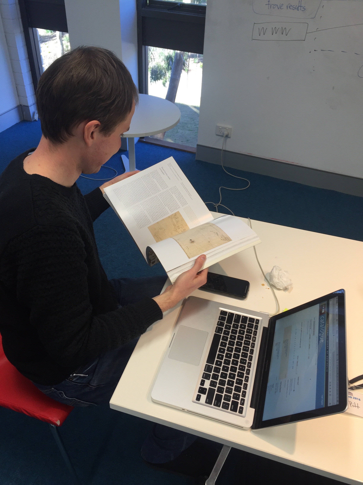
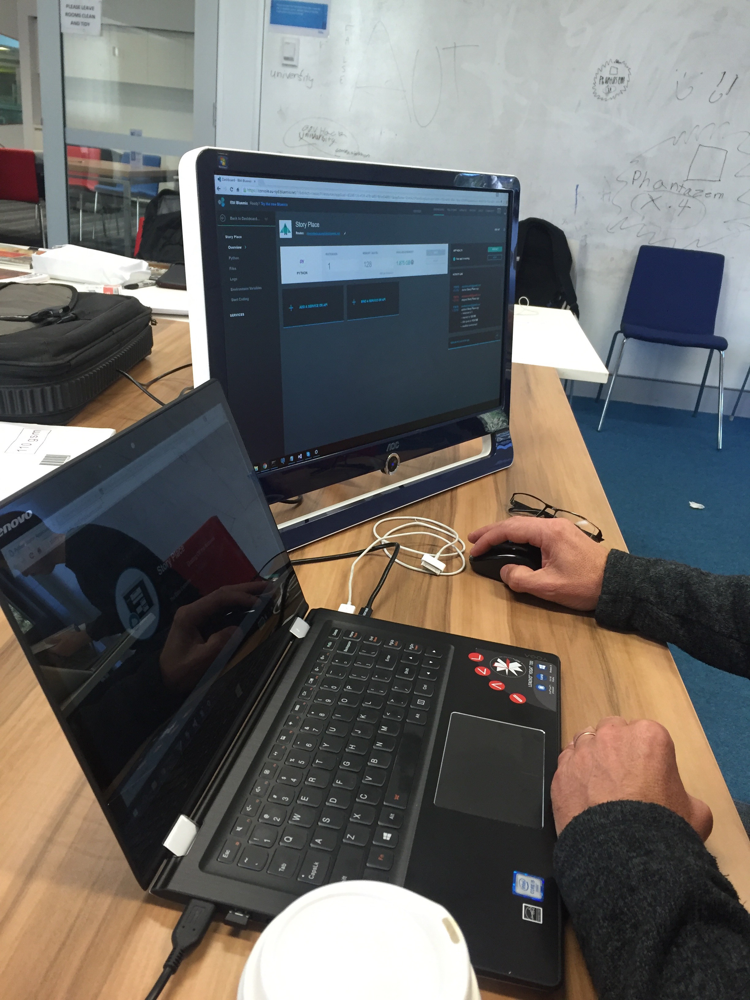

What is Story Place?
Story Place is a collaborative platform linking communities with the history and heritage of the places they live and work. It is a place for everyone to share stories and to engage with existing datasets produced by government and cultural institutions such as libraries, museums, archives and historical societies.
The Vision
Many Australians have a keen interest in the past and have stories to share. Australia’s government agencies and other cultural institutions have accumulated a wealth of historical data sets. The vision of Story Place is to provide a forum where individual stories and formal heritage data can meet.
- Open up your stories
- Open up your treasures
- Begin with a map
- Search engine is a tool
- A story that needs a home.
- Stories take place at locations
- Stories relating to home steads – who worked there? Who owned it?
- Stories feed back into Trove
- Begin with a Map
Who are the Users?
- Small museums
- Local historical societies
- Volunteers
- Families with history that they want to share
- Great for school projects
- Archaologists
- Historians
- Town Planners
- Indigenous Groups
- Tourist
The Data Explorers?
Who we are
  Brain Storming
test paragraph